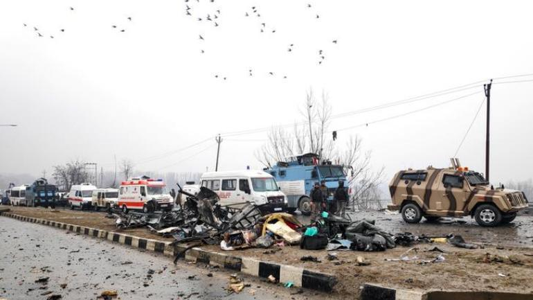

Country Analysis
The Chart below shows the top terrorist group per country. Looking at this information more carefully, the Global Terrorism Dataset sets three criteria where at least 2 of 3 are met:



The Chart below shows the top terrorist group per country. Looking at this information more carefully, the Global Terrorism Dataset sets three criteria where at least 2 of 3 are met: